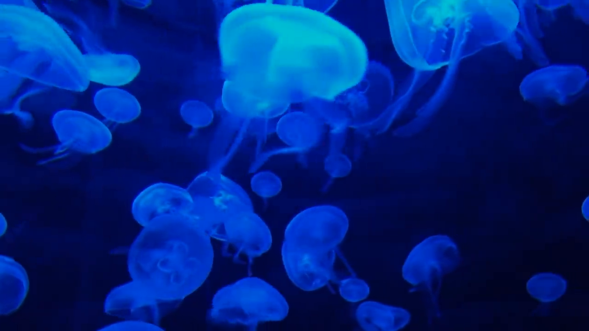
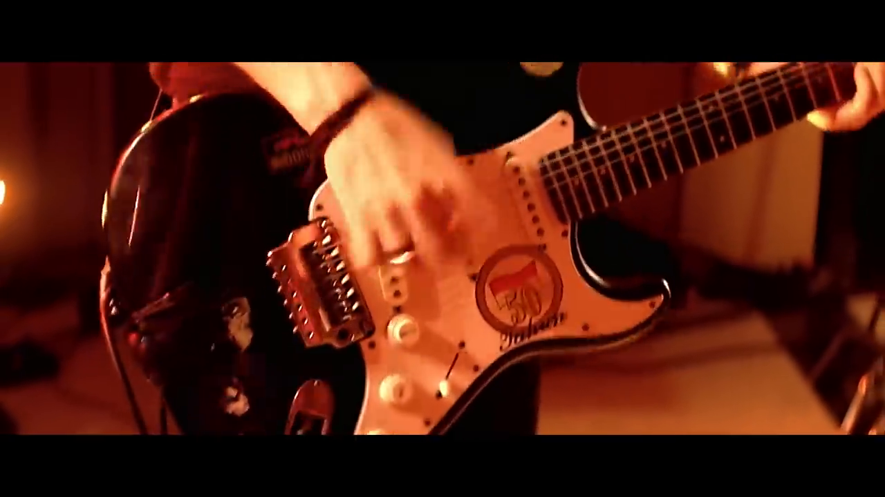

Diff4Steer can find matching music given an image input. For sample images from MelBench, we show that we can generate diverse seed embeddings, which is a vector representation of idealized user preference in the music embedding space. We invert the embedding to music using a embedding-based music generation model, so you can "hear" the embedding. It showcase that Diff4Steer can retrieve diverse music and music genres that match the image.
| Index | Input Image | Generated Audio | Retrieved Audio | Groundtruth Genres |
| 1 |  |
seed 0
seed 1
|
Classical, Compositional Ambient
Electronic, Downtempo
Electronic, Electronica
|
New Age,
Color Noise
|
| 2 |
seed 0
seed 1
|
Electronic, Electro House
Electronic, Stutter House
Electronic, Brostep
|
Classical,
Classical Performance
|
|
| 3 |
seed 0
seed 1
|
Classical, Orchestral Performance
Classical, Italian orchestra
World traditional, Entehno
|
Classical,
Classical Performance
|
|
| 4 |  |
seed 0
seed 1
|
Rock, Classic Rock
Classical, Neo-Classical
Latin, Rock En Espanol
|
Rock, Country, Blues
Rock, Metal, Country
|
Diff4Steer allows combining the infulence from image and text, with customizable strength. Here we showcase the generated seed embedding with image style influence can be combined with the music style specified by text, to represent user's preference on combining artistic styles from different modalities.
| Index | Input Image Query | Steering Text Prompt | No Steering | Steering at 0.04 | Steering at 0.08 |
|---|---|---|---|---|---|
| 1 | Chill-out |
Environmental, Indie Folk, Ocean
|
Downtempo, Ocean, Indie Folk
|
Downtempo, Indietronica, Compositional Ambient
|
|
| 1 | Chill-out |
Environmental, Movie Tunes, Filmi
|
Environmental,Sleep,Healing Hz
|
Sleep, Downtempo, Environmental
|
| Input Text Query | Steering Prompt | Seed Before Steering | Seed After Steering |
|---|---|---|---|
| Unwind to the soothing sounds of cool jazz as the smooth melodies of the saxophone glide effortlessly over the gentle accompaniment of piano and double bass, creating an atmosphere of relaxation and tranquility. | Energetic,upbeat (Positive) | ||
| Drift into a dreamy reverie with the ethereal sounds of dream pop as the shimmering synths of the synthesizer blend with the hazy strumming of guitar and the hypnotic beats of the drum machine, lulling you into a state of blissful calm. | Energetic,upbeat (Positive) | ||
| Take a leisurely stroll through the rolling hills of Western folk country as the plaintive cries of the pedal steel guitar blend with the sweet melodies of mandolin and banjo, evoking a sense of calm and tranquility that's as wide as the open prairie. | Techno (Positive) | ||
| Ease into the mellow vibes of soft rock as the gentle strumming of the acoustic guitar blends with the soothing tones of keyboard and the subtle rhythms of the drum kit, enveloping you in a warm blanket of relaxation and comfort. | Techno (Positive) |
| Input Text Query | Steering Prompt | Seed Before Steering | Seed After Steering |
|---|---|---|---|
| Take a leisurely stroll through the rolling hills of Western folk country as the plaintive cries of the pedal steel guitar blend with the sweet melodies of mandolin and banjo, evoking a sense of calm and tranquility that's as wide as the open prairie. | Relaxing (Negative) | ||
| Drift away on a sea of tranquility with the ambient sounds of electronic music as the ethereal tones of synthesizer mingle with the atmospheric pads and electronic beats, creating a serene sonic landscape that soothes the mind and calms the soul. | Calming (Negative) | ||
| Let the gentle melodies of acoustic folk wash over you as the soulful strains of the violin intertwine with the tender chords of acoustic guitar and the rich harmonies of cello, creating a sense of serenity and contentment. | Relaxing (Negative) | ||
| Drift away on a sea of tranquility with the ambient sounds of electronic music as the ethereal tones of synthesizer mingle with the atmospheric pads and electronic beats, creating a serene sonic landscape that soothes the mind and calms the soul. | Calming (Negative) |